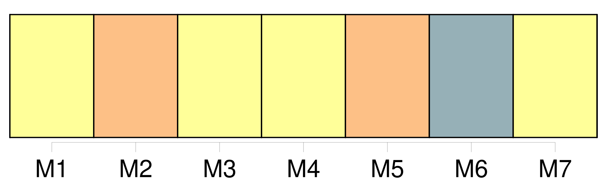
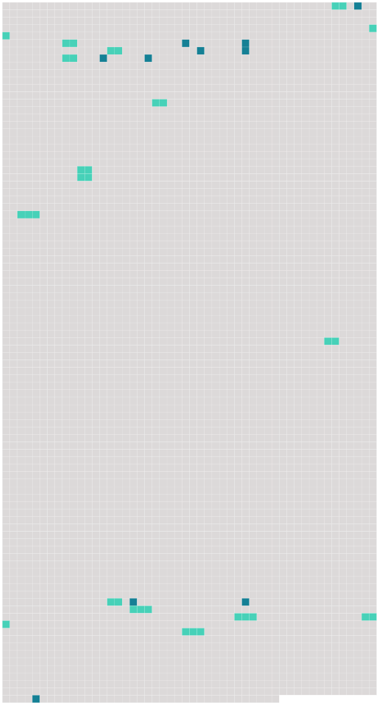

Longueur nb maillons : 25 mentions |
  |
Le juge ordonnera, au bas de son procès-verbal, que les parties comparaîtront en personne devant lui, au jour et à l'heure qu'il indiquera ; et qu'à cet effet, copie de son ordonnance sera par lui adressée à [la partie] contre [laquelle] le divorce est demandé. [6 phrases]
Le demandeur, en vertu de la permission du tribunal, fera citer [le défendeur] , dans la forme ordinaire, comparaître en personne à l'audience à huis clos dans le délai de la loi ; il fera donner copie, en tête de la citation, de la demande en divorce et des pièces produites à l'appui. [1 phrases]
À l'échéance du délai, soit que [le défendeur] comparaisse ou non, le demandeur en personne, assisté d'un conseil s' [il] le juge à propos, exposera ou [fera] exposer les motifs de sa demande ; il représentera les pièces qui l'appuient, et nommera les témoins qu'il se propose de faire entendre. [1 phrases] Si [le défendeur] comparaît en personne ou par un fondé de pouvoir, [il] pourra proposer ou faire proposer [ses] observations, tant sur les motifs de la demande que sur les pièces produites par le demandeur et sur les témoins par lui nommés.
[Le défendeur] nommera, de [son] côté, les témoins qu' [il] se propose de faire entendre, et sur lesquels le demandeur fera réciproquement ses observations. [11 phrases]
Il fera droit à la demande, si elle lui paraît en état d'être jugée ; sinon il admettra le demandeur à la preuve des faits pertinens par lui allégués, et [le défendeur] à la preuve contraire. [20 phrases] Après la clôture des deux enquêtes ou de celle du demandeur, si [le défendeur] n'a pas produit de témoins, le tribunal renverra les parties à l'audience publique, dont il indiquera, le jour et l'heure ; il ordonnera la communication de la procédure au commissaire du Gouvernement, et commettra un rapporteur.
Cette ordonnance sera signifiée [au défendeur] , à la requête du demandeur, dans le délai qu'elle aura déterminé. [8 phrases]
Après une année d'épreuve, si les parties ne se sont pas réunies, l'époux demandeur pourra faire citer [l'autre époux] à comparaître au tribunal, dans les délais de la loi, pour y entendre prononcer le jugement définitif, qui pour lors admettra le divorce. [35 phrases]
Si le demandeur en divorce nie qu'il y ait eu réconciliation, [le défendeur] en fera la preuve, soit par écrit, soit par témoins, dans la forme prescrite en première section du présent chapitre. [65 phrases]
Pour quelque cause que le divorce ait lieu, hors le cas du consentement mutuel, [l'époux] contre [lequel] le divorce aura été admis, perdra tous les avantages que l'autre époux [lui] avait faits, soit par leur contrat de mariage, soit depuis le mariage contracté. [1 phrases]
L'époux qui aura obtenu le divorce, conservera les avantages à lui faits par [l'autre époux] , encore qu'ils aient été stipulés réciproques et que la réciprocité n'ait pas lieu. [1 phrases] Si les époux ne s'étaient fait aucun avantage, ou si ceux stipulés ne paraissaient pas suffisans pour assurer la subsistance de l'époux qui a obtenu le divorce, le tribunal pourra lui accorder, sur les biens de [l'autre époux] , une pension alimentaire, qui ne pourra excéder le tiers des revenus de [cet autre époux] [2 phrases]
Les enfans seront confiés à l'époux qui a obtenu le divorce, à moins que le tribunal, sur la demande de la famille ou du commissaire du Gouvernement, n'ordonne, pour le plus grand avantage des enfans, que tous ou quelques-uns d'eux seront confiés, aux soins soit de [l'autre époux] , soit d'une tierce personne. [17 phrases]
Lorsque la séparation de corps prononcée pour toute autre cause que l'adultère de la femme, aura duré trois ans, l'époux qui était originairement [défendeur] , pourra demander le divorce au tribunal, qui l'admettra, si le demandeur originaire, présent ou dûment appelé, ne consent pas immédiatement à faire cesser la séparation. |
 |
La ressource peut être téléchargée sur la page Ortolang
Si vous avez des questions ou vous voyez des erreurs, merci d'envoyer un mail à silvia.federzoni89@gmail.com
Site développé par S. Federzoni (contact)